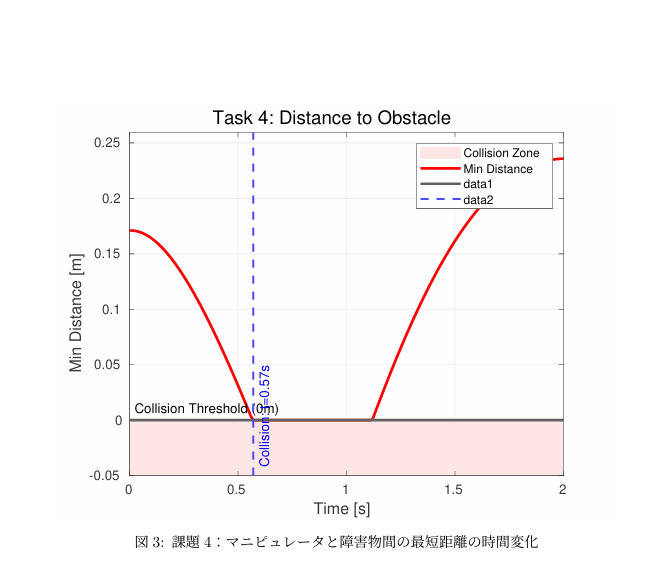
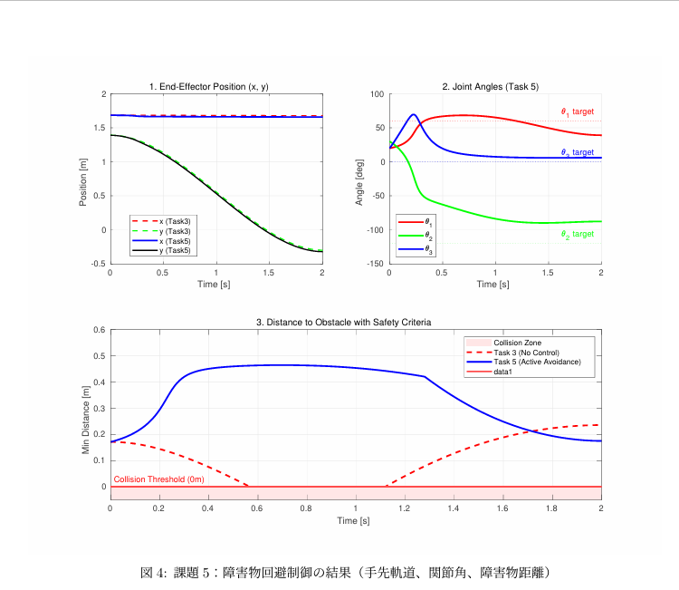

3自由度平面マニピュレータを対象に、決められたルートを手先が正確になぞりつつ、同時に障害物を回避できる制御プログラムを作成する実験です。まず3次多項式を用いて滑らかな手先位置・速度軌道を生成し、最小ノルム解（擬似逆行列）による基本的な逆運動学制御を実装しました。しかし、この手法ではロボットが関節の移動量を最小化しようと「腕を垂らす」動きになり、障害物に衝突してしまいます。そこでロボットが持つ「冗長自由度」を活用し、零空間射影行列と勾配射影法を用いた制御則を実装しました。これにより、手先の軌道追従（主タスク）を維持したまま、肘を高く上げる姿勢変更（副タスク）を同時に行い、安全に障害物を回避することに成功しました。
画像をクリックすると拡大表示されます。


%課題5: 冗長制御による障害物回避(詳細グラフ版)
clear; clc; close all;
% === 1. ユーザーパラメータ設定 ===
K = 5.0; % ゲイン
% 能動的回避のための目標姿勢[deg]
target_q_deg = [60; -120; 0];
% === 2. シミュレーション準備 ===
l1 = 1.0; l2 = 1.0; l3 = 0.3;
tf = 2.0; dt = 0.01;
t_span = 0:dt:tf;
% 障害物定義
obs_lines = [
0.5, 0.0, 1.1, 0.0;
0.5, 0.0, 0.5, -0.3;
1.1, 0.0, 1.1, -0.3;
0.5, -0.3, 1.1, -0.3
];
% 初期姿勢[rad]
q0 = deg2rad([20; 30; 20]);
q_target = deg2rad(target_q_deg);
H2 = K * eye(3);
% === 3. シミュレーション実行 ===
% (A) Task 3: 回避なしゲイン (0)
[dist3, q3, r3] = run_simulation(l1, l2, l3, q0, t_span, obs_lines, q0, zeros(3,3));
% (B) Task 5: 回避あり
[dist5, q5, r5] = run_simulation(l1, l2, l3, q0, t_span, obs_lines, q_target, H2);
% --- 関数定義 ---
function [dist_hist, q_hist, r_hist] = run_simulation(l1, l2, l3, q0, t_span, obs_lines, q_target, H2)
steps = length(t_span); dt = t_span(2) - t_span(1);
q = zeros(3, steps); q(:,1) = q0;
r_hist = zeros(2, steps); dist_hist = zeros(1, steps);
for i = 1:steps
t = t_span(i); q_now = q(:,i);
% 順運動学
p1 = [l1*cos(q_now(1)); l1*sin(q_now(1))];
p2 = p1 + [l2*cos(q_now(1)+q_now(2)); l2*sin(q_now(1)+q_now(2))];
p3 = p2 + [l3*cos(sum(q_now)); l3*sin(sum(q_now))];
r_hist(:,i) = p3;
% 距離計算
dist_hist(i) = calc_min_dist(q_now, l1, l2, l3, obs_lines);
if i < steps
% 逆運動学
J = get_jacobian(q_now, l1, l2, l3);
J_pinv = pinv(J);
vy = -2.535*t^2 + 1.2675*t^2; % (注: レポートの式に基づく略記)
% 冗長制御則: q_dot = J#*r_dot + (I - J#*J) * H2 * (q* - q)
null_term = (eye(3) - J_pinv*J) * H2 * (q_target - q_now);
q_dot = J_pinv * [0; vy] + null_term;
q(:,i+1) = q(:,i) + q_dot * dt;
end
end
q_hist = q;
end